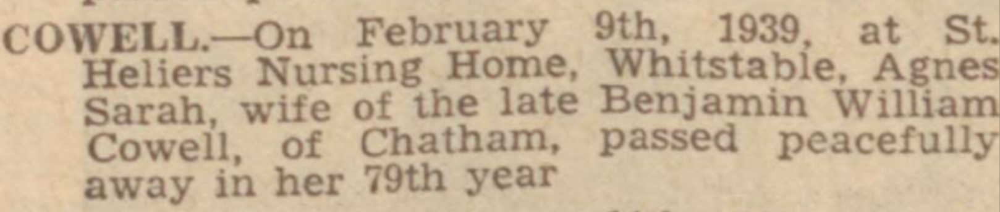
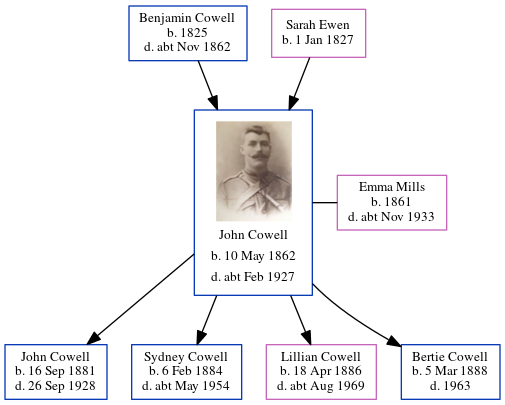

Agnes Sarah Cowell (née Jacobs) 1860 - 1939
[ Home ] | [ Calendar ] | [ Surnames Index ] | [ Errors ] | [ Family History ]Agnes Jacobs, the wife of Benjamin William Cowell (the second cousin three-times-removed on the mother's side of Nigel Horne), was born in Ventnor, Isle Of Wight, England in 18601 and married Benjamin (a woollen warehouse foreman with whom she had 5 children: Ernest Benjamin, Albert William, Minnie Gertrude, Grace Edith and Stanley George) in Medway, Kent, England around May 18812.
During her life, she was living at 5 Hope Street, Chatham, Kent on 5 Apr 18914 and on 31 Mar 19011; and at 157 Glencoe Road, Chatham, Kent on 2 Apr 19113 and on 19 Jun 19215.
She died on 9 Feb 1939 at St Heliers Nursing Home, Whitstable, Kent.
Children
- Ernest Benjamin was born on 9 Jul 1883
- Albert William was born on 26 Apr 1885
- Minnie Gertrude was born c. Nov 1886
- Grace Edith was born on 10 Jun 1890
- Stanley George was born on 8 Jan 1893
Citations
- 1901 England, Wales & Scotland Census - Findmypast (was age 40 and the wife of the head of the household)
- England & Wales marriages 1837-2008 - Findmypast
- 1911 Census for England & Wales - Findmypast (was age 50 and the wife of the head of the household)
- 1891 England, Wales & Scotland Census - Findmypast (was age 30 and the wife of the head of the household)
- 1921 Census Of England & Wales - Findmypast (was age 61 and the wife of the head of the household)
Media
Chatham News 17 Feb 1939

1911 Census for England & Wales - GBC/1911/RG14/03922/0599/2
1901 England, Wales & Scotland Census Image - GBC-1901-0727-0728-0453
1891 England, Wales & Scotland Census - GBC/1891/0005444122
Family Tree
Map
Generated by ged2site. Last updated on Jul 3, 2024
Known Issues
Death date (9 Feb 1939) has no citations
No records of living with anyone
1939 UK register information missing